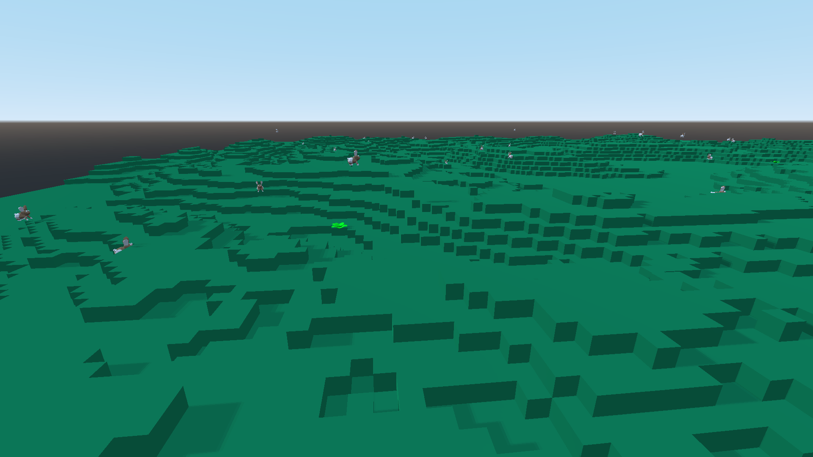
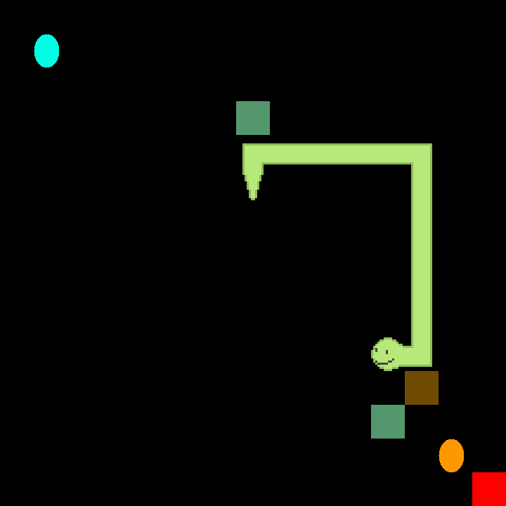
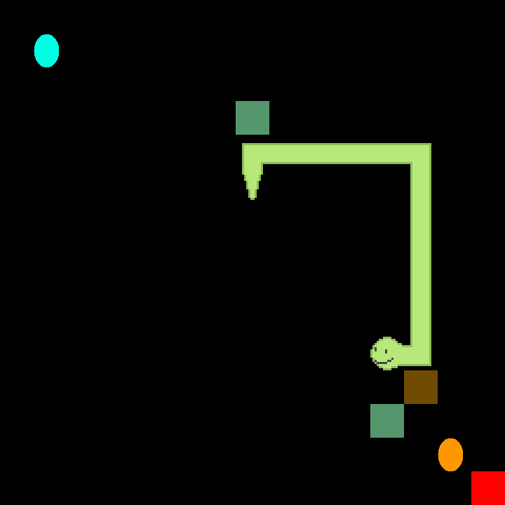

natural selection simulator
written using the godot engine, rabbits hop on a procedurally generated chunk of land at the cost of energy, competing for food which replenishes it. rabbits have different genes, each gene determines traits such as how long the rabbit can live, how high it can jump, the pattern and colour of its fur coat and how greedy it is for food. once a rabbit is well fed it will search for a mate and create more offspring, passing on its genetic traits, with a random chance of mutating. users can determine the traits of the initial population and at the end of the simulation, view all of the rabbits traits, and observe how the rabbits have gradually adapted to their surroundings
i believe that much more work needs to be done to make the program more robust
 
